🏆 EURO 2024 Matches
| Date | Fixture |
Odds |
Win |
Result |
Over ⚽ = over 0.5 ⚽⚽ = over 1.5 ⚽⚽⚽ = over 2.5 ... ► |
Alerts Home 🏥 = Considerable injuries 🏥🏥 = Major injuries 📉 = Dip in form Note, you may see injuries when expanding match but no alert here, meaning the model does not consider them important. |
Alerts Away 🏥 = Considerable injuries 🏥🏥 = Major injuries 📉 = Dip in form Note, you may see injuries when expanding match but no alert here, meaning the model does not consider them important. |
|
|---|---|---|---|---|---|---|---|---|
| Wed. 19 Jun. | Germany 2:0 Hungary Form: DWWW Form: WLLW |
0.79 vs -0.79 | 1.28 | 62% | 1 | ⚽ 1.74 |
📉 Away team has a dip in form recently | |
| Wed. 19 Jun. | Croatia 2:2 Albania Form: WLDD Form: WLDL |
0.33 vs -0.36 | 1.47 | 36% | 0.5 | ⚽ 1.27 |
📉 Home team has a dip in form recently | 📉 Away team has a dip in form recently |
| Wed. 19 Jun. | Scotland 1:1 Switzerland Form: DLDL Form: WDWD |
-0.32 vs 0.21 | 1.89 | 27% | 0.5 | ⚽ 1.96 |
📉 Home team has a dip in form recently | 📉 Away team has a dip in form recently |
🏆 Copa America 2024 Matches
| Date | Fixture |
Odds |
Win |
Result |
Over ⚽ = over 0.5 ⚽⚽ = over 1.5 ⚽⚽⚽ = over 2.5 ... ► |
Alerts Home 🏥 = Considerable injuries 🏥🏥 = Major injuries 📉 = Dip in form Note, you may see injuries when expanding match but no alert here, meaning the model does not consider them important. |
Alerts Away 🏥 = Considerable injuries 🏥🏥 = Major injuries 📉 = Dip in form Note, you may see injuries when expanding match but no alert here, meaning the model does not consider them important. |
|---|
🌍 Global Matches
| Date | Fixture |
Odds |
Win |
Result |
Over ⚽ = over 0.5 ⚽⚽ = over 1.5 ⚽⚽⚽ = over 2.5 ... ► |
Alerts Home 🏥 = Considerable injuries 🏥🏥 = Major injuries 📉 = Dip in form Note, you may see injuries when expanding match but no alert here, meaning the model does not consider them important. |
Alerts Away 🏥 = Considerable injuries 🏥🏥 = Major injuries 📉 = Dip in form Note, you may see injuries when expanding match but no alert here, meaning the model does not consider them important. |
|
|---|---|---|---|---|---|---|---|---|
| Wed. 19 Jun. | Real Frontera SC 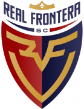 21:00 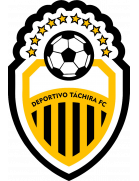 Deportivo Táchira Form: WDDD Form: LDLW |
-23.43 vs 22.8 | n/a | 99% | None | ⚽ 1.3 |
📉 Home team has a dip in form recently | 📉 Away team has a dip in form recently |
| Wed. 19 Jun. | Dynamo Puerto FC 21:00 Monagas SC Form: DLWW Form: DDWW |
-16.16 vs 15.21 | n/a | 99% | None | ⚽⚽⚽ 3.09 |
📉 Home team has a dip in form recently | |
| Wed. 19 Jun. | Gimpo FC 1:0 Jeonbuk Hyundai Motors Form: WWWD Form: DLLD |
-2.28 vs 1.4 | n/a | 74% | 0 | ⚽ 1.0 |
📉 Away team has a dip in form recently | |
| Wed. 19 Jun. | Universidad Central de Venezuela 21:00 Nueva Esparta F.C Form: DDLW Form: WDLL |
1.3 vs -2.21 | n/a | 73% | None | 😴 0.37 |
📉 Home team has a dip in form recently | 📉 Away team has a dip in form recently |
| Wed. 19 Jun. | B36 Tórshavn 3:0 TB Tvøroyri Form: WDDD Form: DWLD |
1.11 vs -1.88 | 1.06 | 71% | 1 | ⚽ 1.53 |
📉 Home team has a dip in form recently | 📉 Away team has a dip in form recently |
| Wed. 19 Jun. | Universidad O&M FC Unknown Cibao FC Form: DDWW Form: DWWD |
-1.54 vs 0.93 | n/a | 67% | None | ⚽ 1.21 |
||
| Wed. 19 Jun. | Atlético Vega Real Unknown Atlético San Cristóbal Form: LDDW Form: LLLW |
0.93 vs -1.93 | n/a | 67% | None | ⚽ 1.29 |
📉 Home team has a dip in form recently | 📉 Away team has a dip in form recently |
| Wed. 19 Jun. | FC Buxoro 3:0 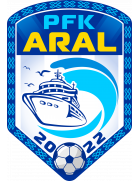 Aral Nukus Form: DLWW Form: DWDW |
0.9 vs -1.48 | n/a | 66% | 1 | ⚽ 1.06 |
📉 Home team has a dip in form recently | |
| Wed. 19 Jun. | Ulsan HD FC 7:4 after pensafter pens Gyeongnam FC Form: DWWW Form: DLLD |
0.82 vs -1.58 | n/a | 63% | 1 | ⚽⚽ 2.16 |
📉 Away team has a dip in form recently | |
| Wed. 19 Jun. | HJK Helsinki 3:1 Kuopion Palloseura Form: WWWW Form: WLWL |
0.82 vs -1.37 | 2.4 | 63% | 1 | ⚽⚽ 2.56 |
📉 Away team has a dip in form recently | |
| Wed. 19 Jun. | Santos FC 2:0 Goiás EC Form: LLWD Form: LDLL |
0.82 vs -1.71 | 1.01 | 63% | 1 | ⚽ 1.76 |
🏥 📉 Home team has considerable injuries and a dip in form recently | 📉 Away team has a dip in form recently |
| Wed. 19 Jun. | Germany 2:0 Hungary Form: DWWW Form: WLLW |
0.79 vs -0.79 | 1.28 | 62% | 1 | ⚽ 1.74 |
📉 Away team has a dip in form recently | |
| Wed. 19 Jun. | Dvo. Rayo Zuliano 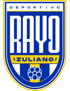 21:00 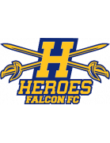 Héroes de Falcón Form: DLWW Form: DDLL |
0.78 vs -1.56 | n/a | 61% | None | ⚽ 1.63 |
📉 Home team has a dip in form recently | 📉 Away team has a dip in form recently |
| Wed. 19 Jun. | FC Nomme United 0:6 FCI Levadia Form: LDWD Form: WWWW |
-1.22 vs 0.67 | n/a | 57% | 1 | ⚽⚽ 2.09 |
📉 Home team has a dip in form recently | |
| Wed. 19 Jun. | FC Flora Tallinn 3:1 Jalgpallikool Tammeka Form: WWWD Form: DLWL |
0.62 vs -1.56 | n/a | 55% | 1 | ⚽⚽ 2.35 |
📉 Away team has a dip in form recently | |
| Wed. 19 Jun. | Breidablik Kópavogur 2:1 KA Akureyri Form: LDLL Form: WLLW |
0.59 vs -1.29 | n/a | 53% | 1 | ⚽⚽⚽ 3.26 |
📉 Home team has a dip in form recently | 📉 Away team has a dip in form recently |
| Wed. 19 Jun. | Bucheon FC 1995 2:3 Gwangju FC Form: DLLW Form: WWLL |
-1.24 vs 0.57 | 1.7 | 53% | 1 | ⚽ 1.03 |
📉 Home team has a dip in form recently | 📉 Away team has a dip in form recently |
| Wed. 19 Jun. | Turun Palloseura 2:2 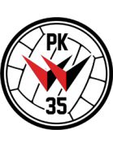 Pallokerho-35 Form: WWWW Form: WWWD |
0.49 vs -0.93 | n/a | 49% | 0.5 | ⚽⚽ 2.13 |
||
| Wed. 19 Jun. | FC Dziugas Telsiai 0:4 FK Zalgiris Vilnius Form: WWDW Form: WWWW |
-0.93 vs 0.46 | n/a | 47% | 1 | ⚽ 1.89 |
||
| Wed. 19 Jun. | Dong A Thanh Hoa FC 1:1 Khanh Hoa FC Form: LDWD Form: LLLD |
0.43 vs -1.55 | n/a | 45% | 0.5 | ⚽⚽ 2.26 |
🏥 📉 Home team has considerable injuries and a dip in form recently | 📉 Away team has a dip in form recently |
| Wed. 19 Jun. | The Cong - Viettel FC 0:0 Ho Chi Minh City FC Form: WWDD Form: WWDD |
0.4 vs -1.38 | n/a | 42% | 0.5 | 😴 0.86 |
📉 Home team has a dip in form recently | 📉 Away team has a dip in form recently |
| Wed. 19 Jun. | Manta FC 2:1 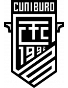 Cuniburo FC Form: DLWW Form: WWWW |
0.37 vs -1.38 | n/a | 39% | 1 | ⚽ 1.42 |
📉 Home team has a dip in form recently | 🏥🏥 Away team has MAJOR injuries |
| Wed. 19 Jun. | Baladiyat El Mahalla 0:2 Pyramids FC Form: WLWW Form: WWWW |
-1.03 vs 0.35 | 1.35 | 38% | 1 | ⚽⚽ 2.91 |
📉 Home team has a dip in form recently | |
| Wed. 19 Jun. | Croatia 2:2 Albania Form: WLDD Form: WLDL |
0.33 vs -0.36 | 1.47 | 36% | 0.5 | ⚽ 1.27 |
📉 Home team has a dip in form recently | 📉 Away team has a dip in form recently |
| Wed. 19 Jun. | Incheon United 4:3 after pensafter pens Gimcheon Sangmu Form: DWLL Form: LLWW |
-1.02 vs 0.29 | 3.45 | 33% | 0 | ⚽⚽ 2.06 |
📉 Home team has a dip in form recently | 📉 Away team has a dip in form recently |
| Wed. 19 Jun. | Scotland 1:1 Switzerland Form: DLDL Form: WDWD |
-0.32 vs 0.21 | 1.89 | 27% | 0.5 | ⚽ 1.96 |
📉 Home team has a dip in form recently | 📉 Away team has a dip in form recently |
| Wed. 19 Jun. | Papua New Guinea 1:1 Tahiti Form: LLDW Form: WWWD |
-0.6 vs 0.2 | n/a | 26% | 0.5 | ⚽⚽⚽ 3.12 |
📉 Home team has a dip in form recently | |
| Wed. 19 Jun. | Daejeon Hana Citizen 7:8 after pensafter pens Jeju United Form: DLWL Form: LWLW |
0.16 vs -1.34 | 2.52 | 23% | 0 | ⚽⚽ 2.24 |
📉 Home team has a dip in form recently | 🏥 📉 Away team has considerable injuries and a dip in form recently |
| Wed. 19 Jun. | Vaasan Palloseura 1:1 AC Oulu Form: DDWD Form: WLDW |
0.15 vs -0.84 | n/a | 22% | 0.5 | ⚽⚽ 2.52 |
📉 Home team has a dip in form recently | 📉 Away team has a dip in form recently |
| Wed. 19 Jun. | Surkhon Termiz 2:1 Metallurg Bekabad Form: WDWL Form: DLDL |
0.14 vs -0.97 | n/a | 21% | 1 | ⚽ 1.32 |
📉 Home team has a dip in form recently | 📉 Away team has a dip in form recently |
| Wed. 19 Jun. | FK Suduva Marijampole 2:2 FK Kauno Zalgiris Form: LDLL Form: WDDW |
-0.75 vs 0.13 | 2.02 | 21% | 0.5 | ⚽⚽ 2.62 |
📉 Home team has a dip in form recently | 📉 Away team has a dip in form recently |
| Wed. 19 Jun. | Ekenäs IF 1:2 IFK Mariehamn Form: WLWL Form: WLDL |
0.12 vs -0.84 | n/a | 20% | 0 | ⚽⚽ 2.1 |
📉 Home team has a dip in form recently | 📉 Away team has a dip in form recently |
| Wed. 19 Jun. | Grêmio Novorizontino 1:1 Amazonas FC Form: WLDW Form: WLDW |
0.12 vs -0.73 | n/a | 19% | 0.5 | ⚽ 1.1 |
📉 Home team has a dip in form recently | 📉 Away team has a dip in form recently |
| Wed. 19 Jun. | Seongnam FC 6:5 after pensafter pens Chungbuk Cheongju FC Form: WWLL Form: DLWD |
0.11 vs -0.82 | 2.34 | 19% | 1 | ⚽ 1.1 |
📉 Home team has a dip in form recently | 📉 Away team has a dip in form recently |
| Wed. 19 Jun. | Pohang Steelers 6:5 after pensafter pens Suwon Samsung Bluewings Form: DWWD Form: DLWD |
0.11 vs -1.03 | 1.65 | 19% | 1 | ⚽ 1.76 |
🏥 📉 Away team has considerable injuries and a dip in form recently | |
| Wed. 19 Jun. | Yelimay Semey 2:1 FK Aktobe Form: LDDW Form: WWDL |
0.11 vs -0.69 | n/a | 19% | 1 | ⚽ 1.37 |
📉 Home team has a dip in form recently | 📉 Away team has a dip in form recently |
| Wed. 19 Jun. | Samoa 1:9 Fiji Form: WLLL Form: LWWW |
-0.35 vs 0.1 | n/a | 18% | 1 | ⚽⚽⚽⚽⚽ 5.58 |
📉 Home team has a dip in form recently | |
| Wed. 19 Jun. | Atlético Pantoja Unknown Moca FC Form: LLWD Form: DWWW |
0.1 vs -0.8 | n/a | 18% | None | ⚽ 1.51 |
📉 Home team has a dip in form recently | |
| Wed. 19 Jun. | Cleopatra FC 0:1 Modern Future FC Form: LWWL Form: DDWL |
0.09 vs -1.02 | n/a | 18% | 0 | ⚽⚽ 2.0 |
📉 Home team has a dip in form recently | 📉 Away team has a dip in form recently |
| Wed. 19 Jun. | FK TransINVEST 3:0 FK Panevezys Form: LLWW Form: WWLL |
-0.86 vs 0.08 | 2.42 | 16% | 0 | ⚽ 1.54 |
📉 Home team has a dip in form recently | 🏥 📉 Away team has considerable injuries and a dip in form recently |
| Wed. 19 Jun. | Ilves Tampere 2:2 SJK Seinäjoki Form: LDWL Form: WWDW |
0.07 vs -0.65 | n/a | 16% | 0.5 | ⚽⚽ 2.59 |
📉 Home team has a dip in form recently | |
| Wed. 19 Jun. | ÍF Grótta 2:3 UMF Njardvík Form: WDWD Form: DWLL |
0.06 vs -0.73 | n/a | 15% | 0 | ⚽ 1.94 |
📉 Home team has a dip in form recently | 📉 Away team has a dip in form recently |
| Wed. 19 Jun. | FC Lahti 3:3 IF Gnistan Form: DWDL Form: DWLL |
0.06 vs -0.71 | n/a | 14% | 0.5 | ⚽⚽ 2.61 |
📉 Home team has a dip in form recently | 📉 Away team has a dip in form recently |
| Wed. 19 Jun. | Club Africain Tunis 0:0 Etoile Sportive du Sahel Form: DDWL Form: DLDL |
0.05 vs -0.71 | 2.0 | 14% | 0.5 | 😴 0.62 |
📉 Home team has a dip in form recently | 📉 Away team has a dip in form recently |
| Wed. 19 Jun. | Club Leones del Norte 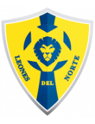 21:00 Chacaritas FC Form: DDWW Form: LLDW |
-0.59 vs 0.05 | 3.85 | 14% | None | ⚽ 1.05 |
📉 Away team has a dip in form recently | |
| Wed. 19 Jun. | York United FC 00:00 Pacific FC Form: DWLD Form: LLDD |
0.05 vs -0.78 | n/a | 14% | None | ⚽ 1.64 |
📉 Home team has a dip in form recently | 📉 Away team has a dip in form recently |
| Wed. 19 Jun. | Doma United 0:1 Sunshine Stars Form: LLLD Form: WWWL |
0.04 vs -0.93 | n/a | 13% | 0 | 😴 0.54 |
📉 Home team has a dip in form recently | 📉 Away team has a dip in form recently |
| Wed. 19 Jun. | Delfines del Este FC Unknown Atlántico FC Form: DLWD Form: LLWW |
0.04 vs -0.73 | n/a | 13% | None | ⚽ 1.62 |
📉 Home team has a dip in form recently | 📉 Away team has a dip in form recently |
| Wed. 19 Jun. | Marconi Stallions FC postponed Rockdale Ilinden FC Form: WLWW Form: WLWW |
0.0 vs -0.46 | n/a | 10% | None | ⚽⚽ 2.23 |
📉 Home team has a dip in form recently | 📉 Away team has a dip in form recently |
| Wed. 19 Jun. | Salon Palloilijat 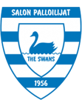 1:3 Järvenpään Palloseura Form: DDDD Form: WDDL |
-0.03 vs -0.69 | n/a | 9% | 0 | ⚽⚽ 2.28 |
📉 Home team has a dip in form recently | 📉 Away team has a dip in form recently |
| Wed. 19 Jun. | Yokohama F. Marinos 3:2 Sanfrecce Hiroshima Form: WLWW Form: WWLW |
-0.04 vs -0.54 | n/a | 9% | 1 | ⚽⚽ 2.5 |
📉 Home team has a dip in form recently | 📉 Away team has a dip in form recently |
| Wed. 19 Jun. | US Monastir 1:1 Stade Tunisien Form: WLDL Form: DDWW |
-0.04 vs -0.51 | 1.61 | 9% | 0.5 | ⚽ 1.0 |
📉 Home team has a dip in form recently | |
| Wed. 19 Jun. | AS Soliman 1:0 AS Marsa Form: WWDW Form: DWLL |
-0.05 vs -0.71 | n/a | 9% | 1 | 😴 0.74 |
📉 Away team has a dip in form recently | |
| Wed. 19 Jun. | Xorazm Urganch 0:0 Mash'al Mubarek Form: LLDW Form: DWLW |
-0.06 vs -0.71 | n/a | 9% | 0.5 | ⚽ 1.45 |
📉 Home team has a dip in form recently | 📉 Away team has a dip in form recently |
| Wed. 19 Jun. | Paysandu SC 1:1 Clube de Regatas Brasil (AL) Form: WLWD Form: LLWD |
-0.07 vs -0.64 | 2.34 | 9% | 0.5 | ⚽ 1.8 |
📉 Home team has a dip in form recently | 📉 Away team has a dip in form recently |
| Wed. 19 Jun. | Atlético Clube Goianiense 1:2 Criciúma Esporte Clube Form: DWLD Form: LWDW |
-0.09 vs -0.77 | n/a | 8% | 0 | ⚽⚽ 2.26 |
🏥 📉 Home team has considerable injuries and a dip in form recently | |
| Wed. 19 Jun. | Víkingur Gøta 18:30 HB Tórshavn Form: LWLW Form: LWLL |
-0.25 vs -0.12 | 1.38 | 8% | None | ⚽⚽ 2.22 |
📉 Home team has a dip in form recently | 📉 Away team has a dip in form recently |
| Wed. 19 Jun. | Käpylän Pallo 0:3 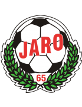 FF Jaro Form: LLDL Form: WDLD |
-0.36 vs -0.14 | n/a | 7% | 1 | ⚽⚽ 2.72 |
📉 Home team has a dip in form recently | 📉 Away team has a dip in form recently |
| Wed. 19 Jun. | FC Haka 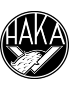 0:0 FC Inter Turku Form: WWWD Form: WLWD |
-0.15 vs -0.44 | n/a | 7% | 0.5 | ⚽⚽ 2.14 |
📉 Away team has a dip in form recently | |
| Wed. 19 Jun. | Botafogo de Futebol e Regatas 1:1 Club Athletico Paranaense Form: WWDL Form: WDDD |
-0.22 vs -0.99 | n/a | 6% | 0.5 | ⚽ 1.93 |
🏥 📉 Home team has considerable injuries and a dip in form recently | 🏥 📉 Away team has considerable injuries and a dip in form recently |
| Wed. 19 Jun. | Quang Nam FC 4:2 Song Lam Nghe An FC Form: LLWW Form: WDLL |
-0.23 vs -0.63 | 2.14 | 5% | 1 | ⚽ 1.69 |
📉 Home team has a dip in form recently | 📉 Away team has a dip in form recently |
| Wed. 19 Jun. | JK Trans Narva 0:1 FC Kuressaare Form: WWWW Form: LDLD |
-0.27 vs -0.62 | 2.02 | 5% | 0 | ⚽⚽⚽ 3.18 |
📉 Away team has a dip in form recently | |
| Wed. 19 Jun. | Las Vegas Lights FC 3:3 Colorado Springs Switchbacks FC Form: DWDD Form: WDWD |
-0.28 vs -0.34 | 2.68 | 4% | 0.5 | ⚽ 1.99 |
📉 Home team has a dip in form recently | 📉 Away team has a dip in form recently |
| Wed. 19 Jun. | CSD Vargas Torres 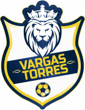 21:00 San Antonio FC Form: LDLL Form: DLLD |
-0.3 vs -0.65 | n/a | 4% | None | 😴 0.39 |
📉 Home team has a dip in form recently | 📉 Away team has a dip in form recently |
| Wed. 19 Jun. | JIPPO Joensuu 0:0 Mikkelin Palloilijat Form: WDLL Form: DLLL |
-0.31 vs -0.34 | n/a | 4% | 0.5 | ⚽⚽ 2.51 |
📉 Home team has a dip in form recently | 📉 Away team has a dip in form recently |
Last updated 19:37:32 2024-06-27
Privacy Policy - 18+. Gamble Responsibly. - Terms